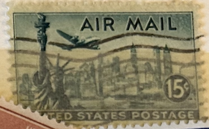
| SOURCE | TITLE| IMAGE MATCH | click to source page |
| eBay | 1947 Statue of Liberty Air Mail Single 15c Postage Stamp -Sc# C35 -MNH,OG czc35a | eBay | 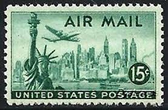 |
| Etsy | アメリア・イアハート航空郵便切手50枚セット、8セント切手、1963年未使用米国切手、ヴィンテージ収集用切手 - Etsy 日本 | 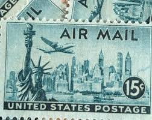 |
| eBay | MOstamps - US #C35 Used Graded XF 90 with PSE cert - Lot # MO-3779 | eBay | 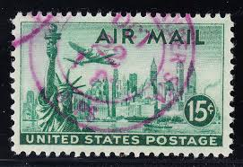 |
| BidCurios | USA - Used stamp - Statue of Liberty Airmail - (B-001/i)r - BidCurios | 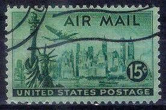 |
| Etsy | 10 US Air Mail Briefmarken, 15 Cent Briefmarken, 1947 Unbenutzte US Briefmarken, Vintage Sammler Briefmarken - Etsy.de | 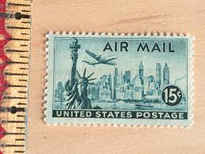 |
| OnlineStampShop | Scott C35 US Air Mail 15c Statue of Liberty-New York 1947 | 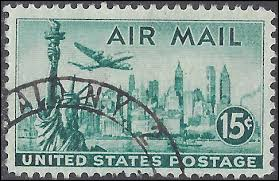 |
| eBay | US 15¢ Stamp Sc #C35 Air Mail MH 1947. | eBay | 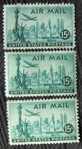 |
| Etsy | Five 5 Unused US Postage Stamps - Statue of Liberty 15c // 15 Cent Stamps // Face Value 0.75 - Etsy Norway | 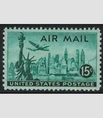 |
| eBay | 15 Cent Denomination US Back of Book Air Mail Stamps for sale | eBay | 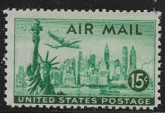 |
| pennyblack1840.com | Thematic postage stamps - Penny Black 1840 | 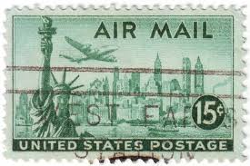 |
| AM PHIL | stamps price list ITALIAN REIGN STAMPS, ITALIAN R.S.I. STAMPS, STAMPS OF LUOGOTENENZA, ITALY STAMPS 1943/46, ITALIAN REPUBLIC STAMPS, ITALIAN COLONIES STAMPS, REPUBLIC OF SAN MARINO STAMPS, VATICAN CITY STAMPS, S.M.O.M. STAMPS, INTERI | 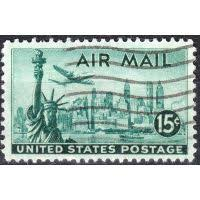 |
| Mystic Stamp | C35 - 1947 15c New York Skyline - Mystic Stamp Company | 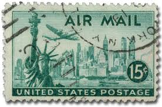 |
| 39 George Washington ideas | george washington, george, washington | 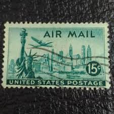 | |
| Shutterstock | Old Canceled Us Air Mail Stamp Stock Photo 14778064 | Shutterstock | 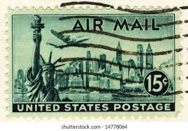 |
| John Derian | Air Mail (Statue of Liberty) | 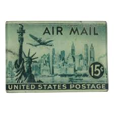 |
| CollectorBazar | USA Used Statue of Liberty - P11454 | 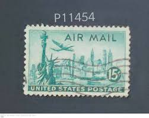 |
| vintagepostagestamps.com | 15¢ New York Statue of Liberty - Pack of 25 unused stamps from 1947 | Vintage Postage Stamps | 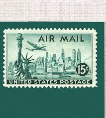 |
| Shutterstock | Usa-circa 1947 15 Cent United States Stockfoto 176831285 | Shutterstock | 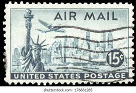 |
| Vintage USA 15 Cent Postage Stamp | 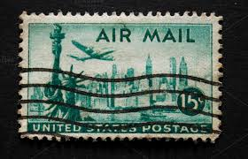 | |
| Todocolección | a) 1990 usa, american lung association, seasons - Buy Antique stamps of United States on todocoleccion | 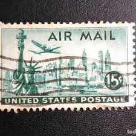 |
| bwdavis.us | USA Airmail, Special Del, etc - Collectibles of Bwdavis | 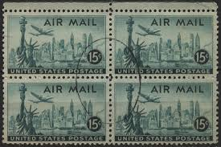 |
| Dreamstime.com | Old Postage Stamp from USA 15 Cents Editorial Image - Image of vintage, airplane: 5023580 | 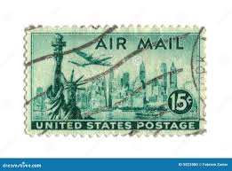 |
| The Itty Bitty Stamp Company | Scott # C-35 Plate Block (MNH) – The Itty Bitty Stamp Company | 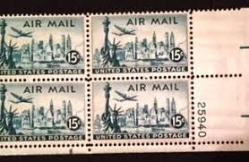 |
| Shutterstock | Statue Liberty Stamp: Over 848 Royalty-Free Licensable Stock Photos | Shutterstock | 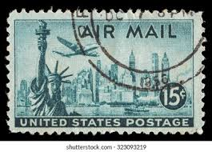 |
| An amazing view of the Manhattan skyline (1947) : r/philately | 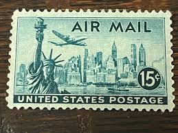 | |
| Dreamstime.com | US Airmail Stamp from 1947 15c with Statue of Liberty Editorial Photography - Image of newspaper, business: 209197052 | 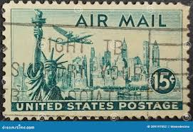 |
| blablaguides.com | Large Logo Stamp Lindsey Breed Honeoye New York Address Insights Business Logo Stamps | 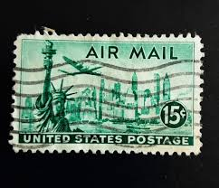 |
| iStock | Old Stamped Italian Stamp Stock Photo - Download Image Now - Italy, Postage Stamp, Germany - iStock | 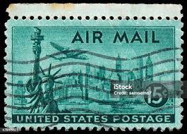 |
| Shutterstock | 28+ Thousand Philatelist Royalty-Free Images, Stock Photos & Pictures | Shutterstock | 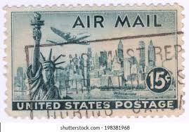 |
| Shutterstock | Madrid Spain December 28 2025 Vintage Stock Photo 2719140033 | Shutterstock | 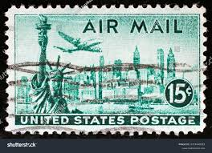 |
| Shutterstock | 81 1947 New York City Royalty-Free Images, Stock Photos & Pictures | Shutterstock | 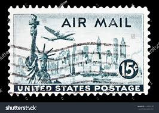 |
| Flickr | stamps air mail air-post stamps Poste aérienne par avion | Flickr | 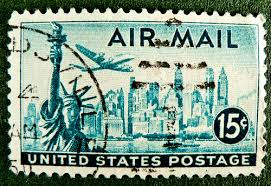 |
| ebid.net | AIR MAIL STAMP 15 cent STATUE OF LIBERTY ( C35) 1947 used on eBid United States | 144080759 | 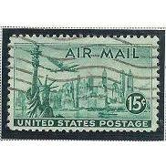 |
| Dreamstime.com | Liberty Old Poster Statue Stock Photos - Free & Royalty-Free Stock Photos from Dreamstime | 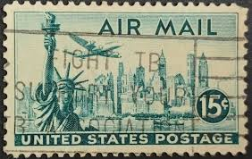 |
| Shutterstock | Postage Stamp New York: Over 1,585 Royalty-Free Licensable Stock Photos | Shutterstock | 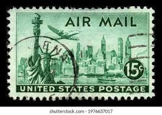 |
| iStock | Diamond Head Honolulu Hawaii Airmail Postage Stamp Stock Photo - Download Image Now - iStock | 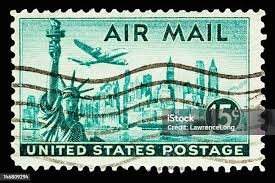 |
| eBay | 1947 New York Skyline .15 cent U.S. Air Mail Postage Stamp Block | eBay | 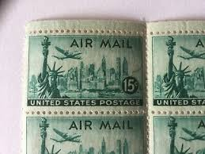 |
| eBay | US Air Mail NYC skyline 15 cent beautiful blue stamp for your colleciiton, wow | eBay | 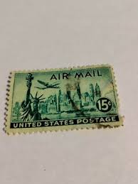 |
| Alamy | United States Postage Stamp - Statue Of Liberty, New York Skyline & Lockheed Constellation Stock Photo - Alamy | 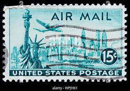 |
| iStock | San Franciscooakland Bay Bridge Stamp Stock Photo - Download Image Now - California, Air Mail, Airplane - iStock | 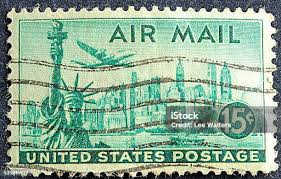 |
| eBay | 1946 15c New York Skyline U.S. Air Mail Scott C35 Mint F/VF NH | eBay | 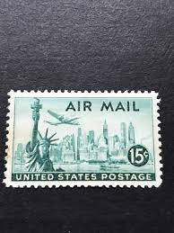 |
| BidCurios | USA - Used Stamp - Statue of Liberty - Airmail - (B-002/K3)q - BidCurios | 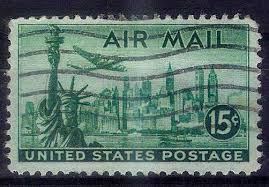 |
| Etsy | 10 Vintage Postage Stamps .. NYC Skyline Airmail 15cent Stamp .. Unused .. #c35 - Etsy | 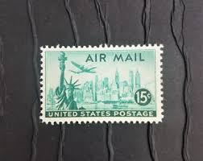 |
| eBay | SCOTT # C34 - C36 - SET OF THREE AIRMAIL STAMPS - F / VF - OG - MNH | eBay | 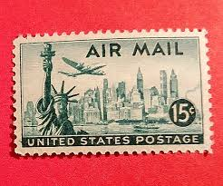 |
| Shutterstock | 3+ Thousand Old Stamps New York Royalty-Free Images, Stock Photos & Pictures | Shutterstock | 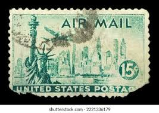 |
| Etsy | Air Mail 15c Us United States , Stamp E1 Acceptable Condition Nice Colour.. - Etsy Ireland | 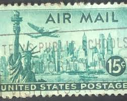 |
| iStock | Ussr And Vietnam Friendship Stamp Stock Photo - Download Image Now - Anniversary, Color Image, Communism - iStock | 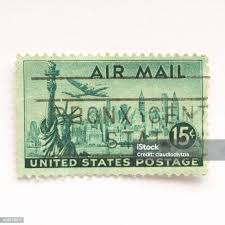 |
| eBay | 1946-7 U.S. AIRMAIL 15c "Statue of Liberty" Sc#C35 M/NH/OG Fresh!+ | eBay | 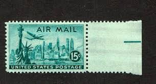 |
| Dreamstime.com | Postage Stamp Printed in United States Shows Statue of Liberty, New York Skyline & Lockheed Constellation, Airmail 1941-1949 Serie Editorial Photography - Image of postage, lockheed: 161342227 |  |
| eBay | US 15¢ Stamp SC #C35 Air Mail MNH 1947 pair | eBay | 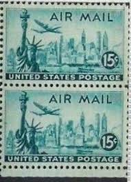 |
| BidCurios | USA - Used stamp - 15c Airmail - Statue of Liberty, City & Aviation - (B-001/J3)r - BidCurios | |
| eBay | US 15 Cent Air Mail Statue of Liberty Stamp, 1947, Scott #C35 | eBay | |
| eBay | STAMP US SCOTT C63 "Statue of Liberty" 15 CENT MNH 1961 PLATE BLOCK OF 4 #26885 | eBay | |
| Etsy | 10 Vintage Unused New York Skyline Stamps / Air Mail NYC Statue of Liberty USPS Postage / 15 Cents US - Etsy | |
| Todocolección | estados unidos 1959 - aéreo - usado - Buy Antique stamps of United States on todocoleccion | |
| BidCurios | South Africa - Used Stamp - 1962 British Settlers Monument, Grahams town - Ship - (B-002/K1)x - BidCurios | |
| eBay | US C34-36 AIRMAIL POSTAGE STAMP 3 SINGLE MNH | eBay | |
| eBay | Statue of Liberty NYC 15c Airmail Stamp FDC Grimsland Cachet Sc#C35 05363 Block | eBay | |
| eBay | U.S.A. VINTAGE, R-A-R-E Airmail Stamps, Used, 1941 (C25), 1949 (C39) & 1944(C26) | eBay |